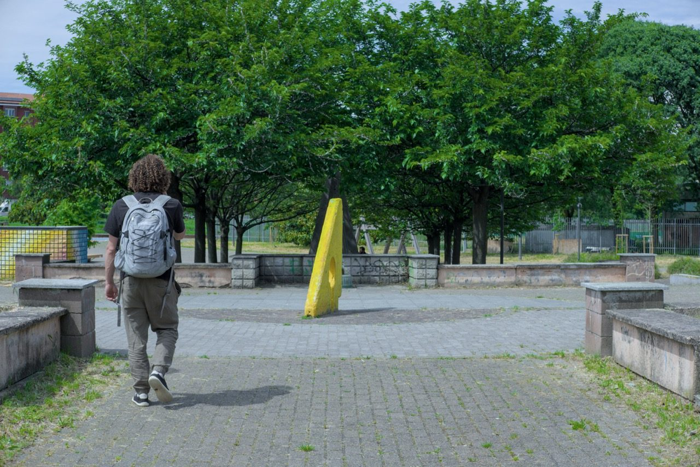

Traces
With others, map the same place. Do not resolve your differences.
What the project has left behind so far, and what is still to come. Each place was listened to by different people.
ITAENG (current language)
Traces
With others, map the same place. Do not resolve your differences.
What the project has left behind so far, and what is still to come. Each place was listened to by different people.
2025Milan
Gallaratese, Milan. Indagine Milano – Festival Immersioni
Where the method began. A participatory sound project by Æ (Aldo Scarpitta and Marco Berni), produced by Piccolo Teatro di Milano with Mare Culturale Urbano. Walks at dusk among the towers, maps held up to the last light, a dark room to listen in.



March 2026
Florence and Berlin
An Erasmus+ small-scale partnership between TAB Take Away Bibliographies (Florence) and Comparative Research Network (Berlin), with Codesign Toscana. Twelve months to turn a practice into a kit that others can use without us.
April 2026Florence
Società di Mutuo Soccorso di Rifredi, Florence
Three days between the partners. Listening walks, sound maps drawn on aerial photographs, the first worksheets tried on ourselves before anyone else.


8 and 9 July 2026Prato
Centro Pecci, Prato
An open call for people under 30: sound practices in urban space. Two days in the museum and around it. The worksheets and the card deck met players from outside the project for the first time.

26 August 2026Gorizia
Palazzo de Grazia, Gorizia. In/visible Cities Festival
Æ carried the method to a city cut by a border. A paper-cup telephone is two cups and a thread; in Gorizia we listened to the thread. One thread on the floor, two threads tied, every thread in a single knot. Can we all still hear each other?
10 to 13 December 2026Florence
Upcoming
Florence. The Florence pilot, with TAB Take Away Bibliographies
Four days across the city: practices to join, works to listen to.
[dates]Berlin
Upcoming
Berlin. With Comparative Research Network
[places and programme]
February 2027Florence
Upcoming
Florence and online. [date and place]
The Listening Kit is presented, open for anyone to use.